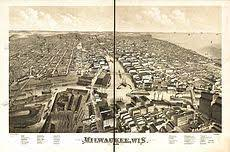
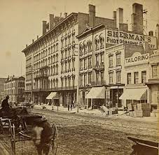

Milwaukee's beginning starts in the fur trade when Jacques Vieau built a post overlooing the Milwaukee and Menomonee Riversin 1795. By 1835 his son started to lay out streets and plots of land that he sold to new settlers. Milwaukee was officially founded in 1846 and by 1850 the population had grown to 20,000 people. Between Milwaukees founding and 1854 a large population of German immigrants moved onto this land. These immigrants brought better industrial skills, refined culture, and Catholicism. Soon Milwaukee became a center for manufacturing weather is was machinery or brewing. You can clearly see the impact that the immigrants still have to this day. Wisconsin overall has a large German population and we still have alot of breweries and maufacturing facilities in Milwaukee to this day. During the Depression Milwaukee was hit a lot harder than other places with employment rates dropping to 20%. During World War 2 a large amount of African Americans from the south moved to Milwaukee to work in the factories. Although Milwaukee isn't necessarily the manufacturing powerhouse it used to be they still manufacture heavy machinery, tools, and brewing is much alive. But now most people are employed by the service industries in Wisconsin.

